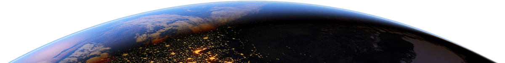

A Terra é o terceiro planeta mais próximo do Sol, o mais denso e o quinto maior dos oito planetas do Sistema Solar.
É também o maior dos quatro planetas telúricos. É por vezes designada como Mundo ou Planeta Azul.
Lar de milhões de espécies de seres vivos, incluindo os humanos, a Terra é o único corpo celeste onde é conhecida a existência de vida.
Font: Youtube.
